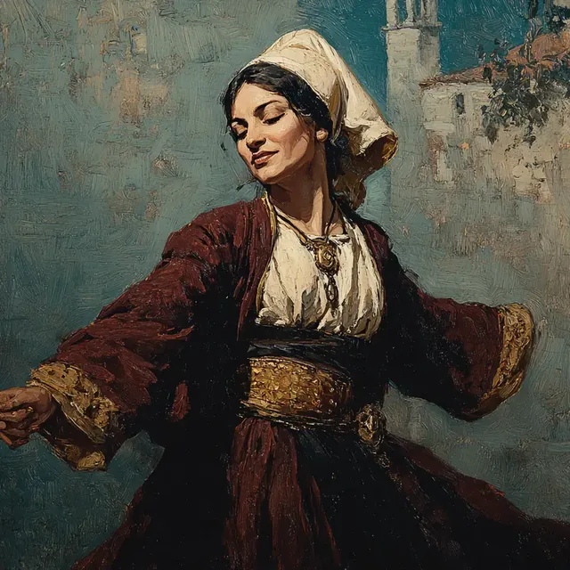

Gizem Faruki, a 44-year-old human woman of Turkish descent, embodies the spirit of a Sufi whirling dervish, adorned in her distinctive attire of white, gold, and blue. A devoted convert from Sunni Islam to Sufism, she has dedicated her life to her spiritual practice and her craft as a baker, running a beloved baklava shop nestled in an alley where she actively engages with the local community. Living in an apartment above her bakery, she oversees its operations alongside her assistant and the assistant's younger brother, fostering connections with neighbors and patrons alike. Known for her strong ties to the local community, Gizem works shifts at her bakery, engaging with regular customers and listening for gossip, which helps her stay attuned to the happenings around her.
Recently, Gizem received a significant invitation to travel with Osman Hamdi Bey to discuss imperial ecumenical policy, marking a moment of growing influence in her life. During a dinner at Thymbra Farm, she mingled with notable guests, including General Patrice de MacMahon, showcasing her nurturing nature by offering sweet treats to children and intervening to prevent Miray from consuming alcohol. Observing her companions, she noted Evelyn Calvert's adeptness in discussions of war and trade, while Osman Hamdi Bey praised her contributions to an archaeological dig site.
The following morning, before dawn, Gizem took to the terrace to practice her Sufi turning on a balance nail board. Her graceful movements drew the attention of Sophia Schliemann, and she seized the opportunity to demonstrate basic turning steps, explaining their devotional significance to younger girls who watched in awe, inspired by her dedication to the art of whirling.
In addition to her spiritual pursuits, Gizem is a courteous diplomat and martial artist, known for her composed demeanor. She engages respectfully with others, exemplified by her address to a Serpent in Turkish, requesting hospitality. In a notable encounter, she approached a large Serpent that emerged from a dark hole to establish a peaceful dialogue. Through her negotiation skills, she successfully convinced the Serpent to forbear if the party removed “interlopers” from an adjacent chamber, showcasing her strategic mindset as she prioritized the group's safety and the resolution of conflicts without unnecessary violence. Following the Serpent's instructions, she assisted in retrieving two men found frozen within a luminous ward. Later, she and her companions followed the Serpent to an outdoor exit, where they discovered one of the men unconscious but alive.
Gizem's commitment to helping others extends beyond her bakery, as she actively gathers information within the community. She consults Nadja, the kitchen organizer at a mosque soup kitchen, about a man last seen at the soup line, indicating her involvement in an ongoing investigation. Her inquiries reflect her dedication to the party's objectives and her connection with the local populace, as she seeks to address the situation surrounding a fevered monster hunter.
In her spiritual journey, Gizem embodies Sufi beliefs and takes an inclusive approach to spirituality. She is known for engaging discussions on faith, particularly regarding the eligibility of magically arisen beings for religious practice. Recognized for her practical demeanor, she connects effectively with others on complex theological matters. Gizem has a friend named Nadja, who introduces her to individuals seeking spiritual guidance, and she understands local lore and culture, which helps her navigate her environment.
Gizem inquired with Nadja about the suitability of Islamic practice for non-human beings and expressed a desire to meet Kore, a being from the Undercity, who had questions about faith. Her interactions reflect a sense of purpose in bridging gaps between different spiritual perspectives. She visited Nazif’s Scents to arrange passage to Kore, navigating the exchange confidently. Upon entering the Undercity, she marveled at the diverse culture and engaged Kore in discussions about Sufism and the inclusivity of non-humans within faith practices. Throughout her journey, Gizem remained grounded in her beliefs while exploring the spiritual complexities around her, demonstrating her commitment to fostering understanding and inclusion among various beings as she shared insights into Sufi teachings.
In a surprising turn, Gizem Faruki adopted the male persona of “Gizem Faruki,” styled as a “Turkish Marlena Dietrich” to blend into the gambling scene with sophistication. She became associated with Jean-Zera Mongé and Chique Manu, engaging in high-stakes gambling at a hidden tea-house club. Possessing skills in deception and social interaction, she used her charm to navigate the dynamics of the gambling table. After returning to the club, Gizem finished the night with a successful card game, repaying the initial stake and netting an additional 300 gold. Her interactions reflect a blend of strategic gambling acumen and adaptability within the social intricacies of the gambling environment, further enriching her multifaceted character.
In her adventures, Gizem also became a key member of a group that includes Sidra al-Najjar, Jean-Zera Mongé, and Miray. She played a significant role in their confrontations with foes, including muggers and a dwarf leader known as Mr. Karen. In a chaotic encounter in a crowded alley, Gizem attempted to cast the spell Charm Person on a Frank, but the Frank resisted and demanded money. As the situation escalated, she faced an orc who charged at her with an axe but missed. In response, Gizem used her combat skills to deliver multiple strikes, injuring the orc. Later, she was thrown aside by the orc, sustaining damage. A pivotal moment occurred when she nonlethally knocked out Mr. Karen with repeated kicks, contributing to the group's success in subduing their attackers. Following the conflict, she engaged with others, discussing community strategies and navigating the complexities of the Undercity's social landscape.
Gizem Faruki is also a member of a group associated with the Ghost of March, linked to the assassination of Nazif, a perfumist. During the chaos at the Festival of Candles, Gizem confirmed Nazif's death while Chique Manu was present. She reported that Ghost of March's entourage wore uniforms of the Sekban soldiers, a unit that had previously destroyed the Janissaries and was disbanded afterward.
Following the festival, Gizem participated in a late-night debrief with companions to discuss the implications of Ghost of March's actions and the unrest in the city. The party decided to investigate Nazif’s perfumery stall to understand the Undercity's power dynamics after his death. Upon covertly entering the perfumery, they encountered Sharif the Strong Fur, a talking black cat who took over Nazif's duties and enforced a no-magic rule in his territory. Gizem was involved in the exploration of the complex beneath Saint Benoit Church, where they faced undead creatures and spectral entities. In a confrontation with animated cadavers, Gizem utilized wild shape to bite and drag one of the foes, aiding in the party's efforts to defeat the undead.
Gizem Faruki is also a bard noted for her use of unsettling magic in combat. She casts spells that induce fear and confusion, including Unsettling Words and Vicious Mockery. In battle, she employs her magic strategically, using Dissonant Whispers to terrify an Undead Priest and a gunman, causing them to retreat. Her spells create opportunities for her allies, allowing them to gain the upper hand, and she has been known to terrify guards, contributing to the chaos of battle.
During a recent shift at her bakery, Gizem conversed with a married couple, Yusuf and Osman, who shared rumors about an underground event at the Hippodrome and advised her to bet on Green. Osman invited Gizem to an upcoming race, warning her that the horses were not real, and set a meeting point at the Theodosius Obelisk near the Hagia Sophia. Gizem also sought information about Janissaries and ghosts at the hammam but found patrons unwilling to discuss such topics. She later staged a search for Matilda Manukian by delivering baked goods to shops, which led to a successful contact with Matilda, who provided directions to navigate the Undercity and access the Ghost of March's compound. Gizem ordered a custom cloak from a disguise shop to assist her group in their upcoming endeavors.
Gizem Faruki possesses a stealth-enhancing cloak and is involved in a plan to infiltrate the Hippodrome, coordinating with Sidra al-Najjar to enter without purchasing tickets. Blending into the crowd of attendees, she uses the throng as cover to avoid scrutiny. During the infiltration, she quietly opens a service door and locks eyes with an elven saboteur, who then flees deeper into the venue. Gizem observes the pervasive enchantment suffusing the Hippodrome structure, noting that while the stonework is material, the entire arena is enveloped in a blanket of magic.
Later, she visits a bead seller named Cyrus, seeking guidance about the Undercity and browsing ritual and magical items. Gizem consults Sif, a tiefling bookseller, who informs her about a recent sale to Chique Manu, a bookmaker. She visits the Styx bathhouse, where she receives an orientation from an attendant and learns about the venue's culture, which is conducive to gathering rumors and conducting business deals. Gizem hears of a bounty on a selective-targeting undead threat and decides to involve her party in the hunt.
As part of her ongoing adventures, Gizem is a member of a trio that includes Sidra al-Najjar and Jean-Zera Mongé, engaged in a mission to identify an assassin known as the Kavalan Of Egypt. During their exploration of the catacombs, she encounters undead creatures, showcasing her combat skills. Gizem grapples with a skeleton, tears off one of its arms, and dismantles it in melee. She displays bravery and quick reflexes, rushing to disarm a Janissaries named Alexander during a tense standoff. While navigating the dangers of the catacombs, she is struck by an arrow trap, demonstrating her willingness to engage directly with threats. She participates in combat against a Giant Skeleton, attempting to weaken it by wrenching its ribs and joints. Despite being hurled against a wall by the Giant Skeleton, she continues to fight alongside her companions. After the battle, she collects trophies from the Giant Skeleton.
Gizem Faruki experiences significant dreams that guide her actions. In one dream, she feels anxiety relieved when someone returns a lost square piece of paper and guides her to the Sublime Porte in Istanbul, where she recognizes a much younger Aziz Sefa Bey escorting her.
After a tense encounter at Topkapi Palace, the party decides to retire to Gizem's home to lay low, eat, and rest. While investigating a Coastal Manor Garden, Gizem engages in melee combat against shadowy, semi-corporeal Janissaries soldiers, striking repeatedly and destroying one. She notices that these shadows resist mundane weapon damage. A shadow's strength-draining attack overwhelms her, causing her to drop limp, but she is immediately revived by Miray with healing magic, restoring a measure of her strength.
Gizem wields a crossbow and wears a headscarf. She later dons a pair of magical spectacles that alter her visual perspective. Gizem noticed a large submerged mirror and saw an unfamiliar East Asian-looking soldier within it; she waved and introduced herself to the soldier, then tossed baklava toward the mirror. A weakened section of the boardwalk collapsed beneath her, but she retained enough footing to remain mobile and discovered the water was shallow enough for her to stand. She pulled Sidra back up onto the far side of the broken boards. Gizem fired her crossbow into a Merrow, wounding it. She put on the magical spectacles and accepted their altered perspective. To avoid the Medusa’s gaze, she covered her eyes with her headscarf, then shot the Medusa with her crossbow and moved behind cover. The Medusa’s snake-hair bit her and delivered heavy poison. Gizem closed in and landed a stunning strike on the Medusa, then fled down the revealed stairs with the party.